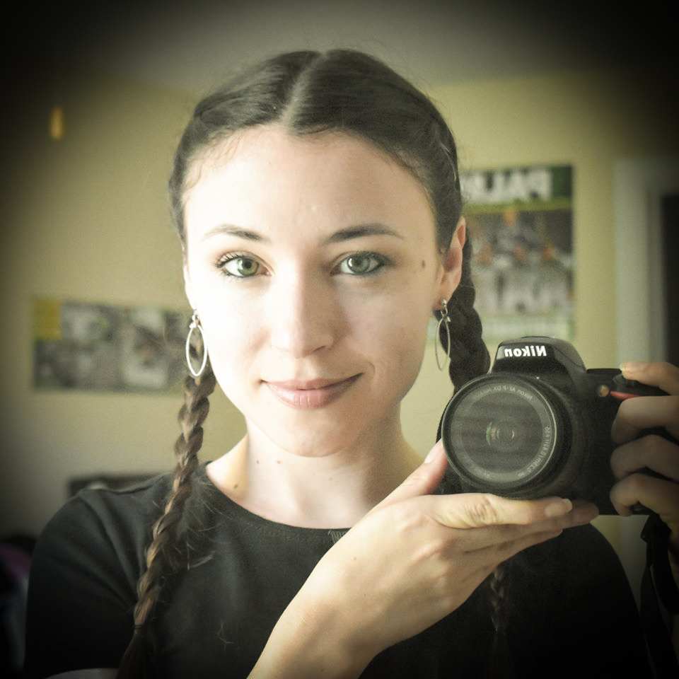

About Me
I came to the United States from Brazil four years ago because I realized there was much more I wanted to experience. It took great courage to leave an established career in a large corporation to try starting again and change my story. Over the years of developing my professional skills, I found myself to be precise, focused, disciplined, and organized. I had studied accounting and realized that it was not for me. I have always been a dreamer, and giving up on my dreams was never an option. As I was always passionate about English, coming specifically to the USA was very important. Finally, I took the opportunity to study in the United States. This was possibly one of the best things I could ask for in my life. I found myself with a lack of opportunities in front of me, and I could decide to do anything I like. When I read about Interactive Multimedia I instantly connected with it. I would be able to build apps and websites, work with photos and videos which I’ve always loved among other possibilities. Now I am about to graduate and I couldn’t be more proud of myself for the path I chose. Specializing in Interactive Multimedia gave me comprehensive training in building interactive apps, websites, and prototypes, as well as foundational knowledge of Java, JavaScript, HTML, CSS, Multimedia Graphics & Design, Network Communications, and UX design.